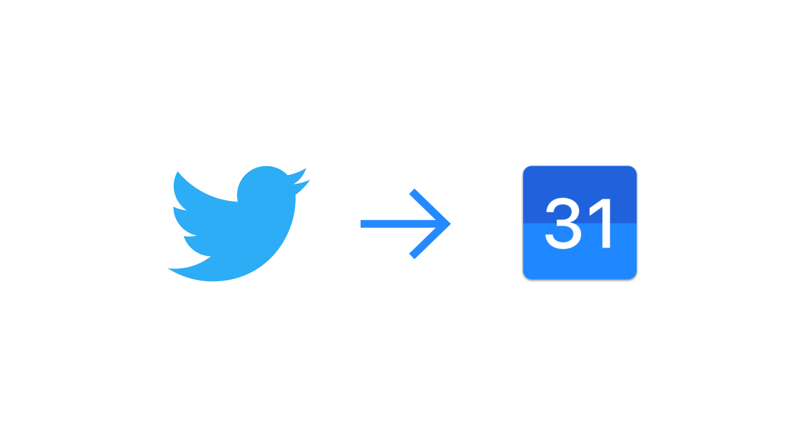
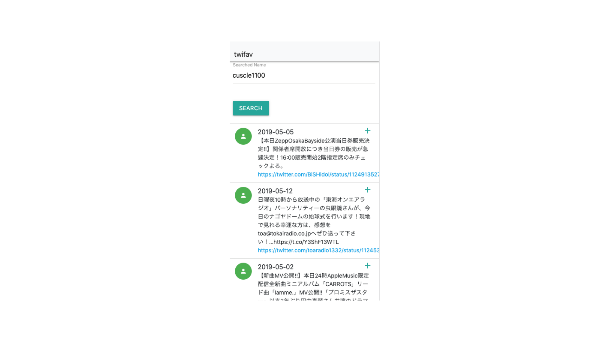
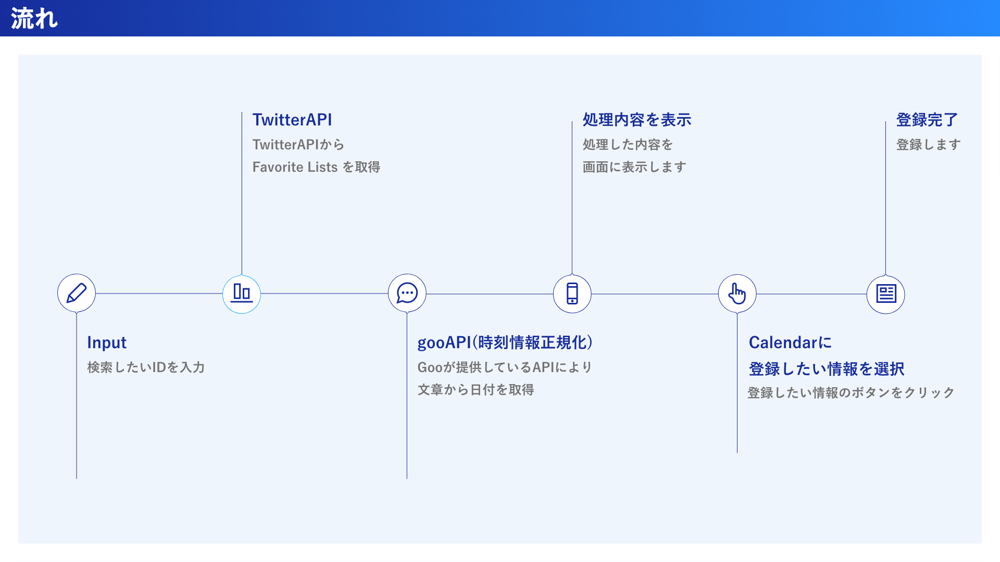
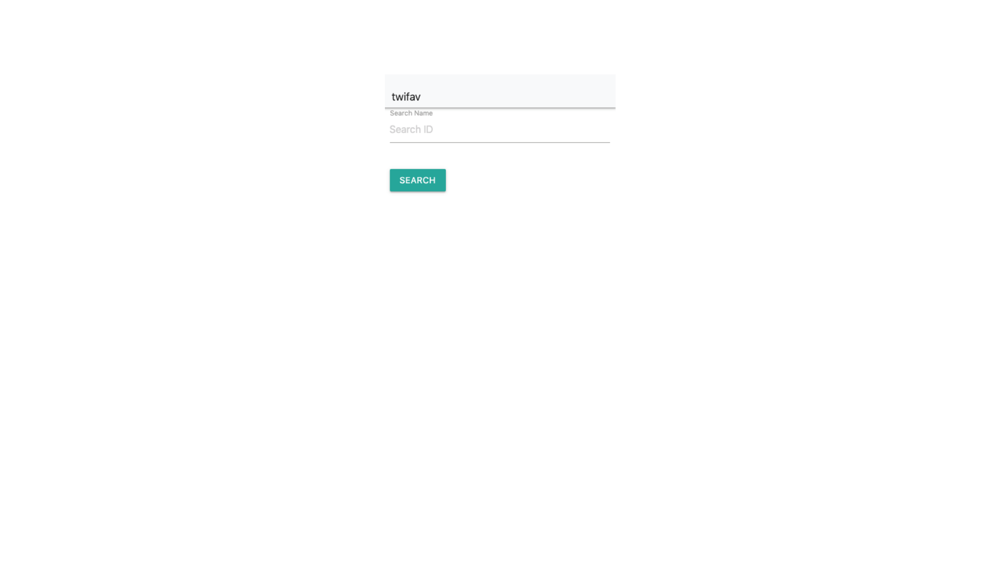
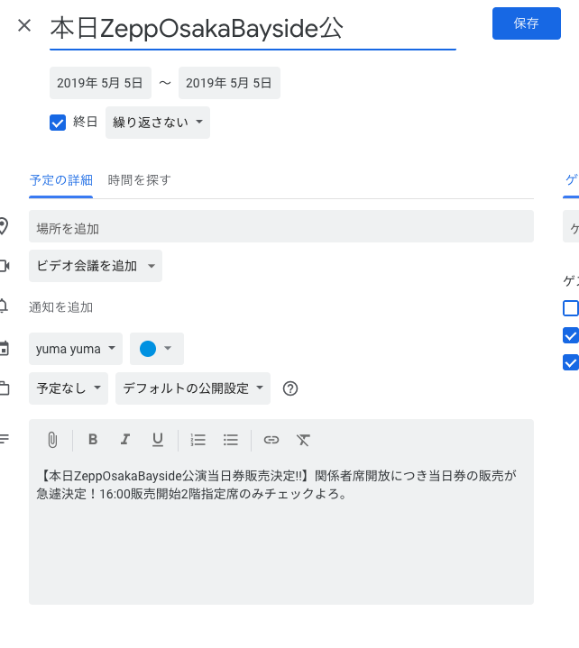

twifav

担当
全部
使用技術
GAS、python(Flask)、Frontend、gooAPI、TwitterAPI
期間
3日間
全部
使用技術
GAS、python(Flask)、Frontend、gooAPI、TwitterAPI
期間
3日間
Why
自分のTwitterの使い方がライブの日程などを確認する情報収集用だったため。そこからカレンダー登録をする際に入力するのが面倒だったから。
What
Twitterのお気に入り欄を取得し、日付情報が入っているツイートを取得し、ワンクリックでcalendarに登録できるサービス。

Flow

TwitterAPIとgooAPIを用いてツイート内容から日付を取得し、カレンダーまでをスムーズに行う。
改善点
- 読み込み時間が長いので、読み込み画面を作成
- UIをもう少し見やすく
- Twitter認証で動くように。今では誰のツイートでも検索できるから。（鍵をかけていると反対に検索できないようになっている）
- goo APIではなくて自作で日付情報取得するような機能を機械学習により作成したい。

